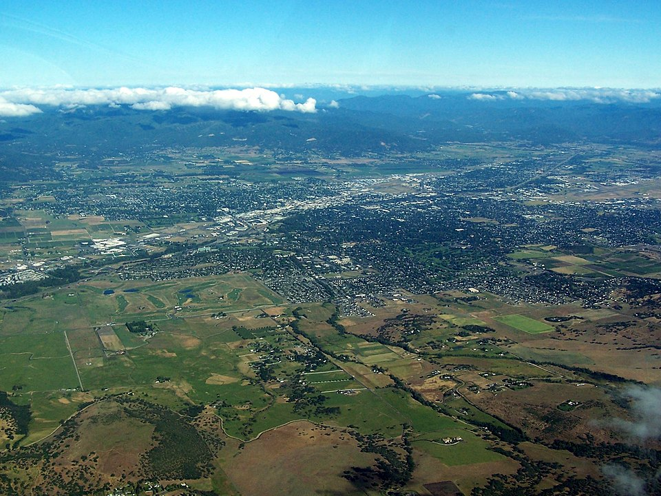

Medford is a city in and the county seat of Jackson County, Oregon, in the United States. As of the 2020 United States Census on April 1, 2020, the city had a total population of 85,824 and a metropolitan area population of 223,259, making the Medford MSA the fourth largest metro area in Oregon. The city was named in 1883 by David Loring, civil engineer and right-of-way agent for the Oregon and California Railroad, after Medford, Massachusetts, which was near Loring's hometown of Concord, Massachusetts. Medford is near the middle ford of Bear Creek.
In 1883, a group of railroad surveyors headed by S. L. Dolson and David Loring arrived in Rock Point, near present-day Gold Hill. They were charged with finding the best route through the Rogue Valley for the Oregon and California Railroad. Citizens of neighboring Jacksonville hoped that it would pass between their town and Hanley Butte, near the present day Claire Hanley Arboretum. Such a move would have all but guaranteed prosperous growth for Jacksonville, but Dolson decided instead to stake the railroad closer to Bear Creek. The response from Jacksonville was mixed, but the decision was final. By November 1883, a depot site had been chosen and a surveying team led by Charles J. Howard was hard at work platting the new town. They completed their work in early December 1883, laying out 82 blocks for development.
source Wikipedia Read the History
In 1883, a group of railroad surveyors headed by S. L. Dolson and David Loring arrived in Rock Point, near present-day Gold Hill. They were charged with finding the best route through the Rogue Valley for the Oregon and California Railroad. Citizens of neighboring Jacksonville hoped that it would pass between their town and Hanley Butte, near the present day Claire Hanley Arboretum. Such a move would have all but guaranteed prosperous growth for Jacksonville, but Dolson decided instead to stake the railroad closer to Bear Creek. The response from Jacksonville was mixed, but the decision was final. By November 1883, a depot site had been chosen and a surveying team led by Charles J. Howard was hard at work platting the new town. They completed their work in early December 1883, laying out 82 blocks for development.
source Wikipedia Read About Geography
Medford sits in a rain shadow between the Cascade Range and Siskiyou Mountains called the Rogue Valley. As such, most of the rain associated with the Pacific Northwest and Oregon in particular skips Medford, making it drier and sunnier than the Willamette Valley. Medford's climate is considerably warmer, both in summer and winter, than its latitude would suggest, with a Mediterranean climate. Summers are akin to Eastern Oregon, and winters resemble the coast. Here, summer sees an average of 57 afternoons over 90 °F or 32.2 °C and eleven afternoons over 100 °F or 37.8 °C. In August 1981, the high temperature reached over 110 °F or 43.3 °C for four consecutive days, with two days reaching 114 °F or 45.6 °C. Freezing temperatures occur on 69 mornings during an average year, and in some years there may be a day or two where the high stays at or below freezing; the average window for freezing temperatures is October 23 through April 23. The city is located in USDA hardiness zone 8. Medford also experiences temperature inversions in the winter which during its lumber mill days produced fog so thick that visibility could be reduced to less than five feet. These inversions can last for weeks; some suggest this is because the metropolitan area has one of the lowest average wind speeds of all American metropolitan areas. The heavy fog returns nearly every winter with the inversions lowering air quality for several months without relief.
source Wikipedia Read About Climate